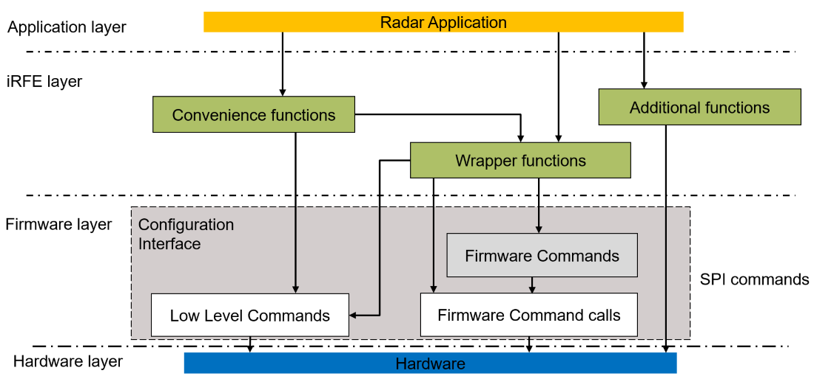

Introduction to iRFE
The CTRX iRFE driver provides an interface for the CTRX MMIC. It provides abstraction for the SPI commands and the hardware described in the User manual for the device. The driver provides an interface to the SPI commands for CTRX provided by the firmware. The driver also provides an interface to configure and execute firmware commands for the CTRX. The detailed description of Individual Firmware commands and their settings can be found in the CTRX user Manual.
Scope of the Driver
- The driver allows control of the Radar operation of the CTRX from Aurix.
- The driver provides low level abstraction to the CTRX hardware details.
- The driver provides support for Rapid prototyping for implementation.
- The driver provides mid level abstraction of CTRX functionality via wrapper functions of firmware commands.
- The driver provides mid level abstraction for firmware commands via convenience functions.
Non-scope of the driver
- To provide high level abstraction of Radar operation.
- To provide advanced signal processing of the Radar data.
Requirements to develop radar application using the driver
- Hightech TriCore Entry Tool chain
- iLLD V1.0.1.x.x Aurix TC3xx Driver or higher
- CTRX evaluation board with Aurix TC3xx microcontroller
Overview of the driver
The below diagram showcases the simplified architecture for the iRFE driver along with the interface to the layers above and below it such as the application layer and the firmware layer:

Simplified_Driver_Architecture_model
The iRFE driver itself is platform independent and provides the user with the following functionalities:
Access to the configuration interface
The CTRX is configured and controlled using the configuration interface which is briefly described at Configuration_interface. Access to this configuration interface forms the core functionality of the driver. Through the commands made available by the configuration interface CTRX the user could create the required Radar Application.
The interface provides access to the following types of commands:
- Low_level_commands : These are the basic commands available from the firmware to do houskeeping tasks such as read previous SPI response or trigger a reset. These driver provides an interface to call these commands. Details of individual commands are briefed in the sub-page Low_level_commands.
- Firmware_command_calls : These are commands which define the execution type or configuration of the firmware commands available for CTRX. These commands define whether a Firmware command is executed directly, executed using a handle or if the Firmware command is only configured for a Handle. The driver provides an interface to these commands. Details of individual commands are briefed in the sub-page Firmware_command_calls.
- Firmware_commands_8191_A11, Firmware_commands_8191_B11, Firmware_commands_8188 : These are high-level commands available in the firmware which provide functionality to configure and execute radar application on each CTRX firmware version. The iRFE driver provides an interface to these firmware commands through the wrapper functions. Details of individual commands and the type of wrapper functions available for each command are briefed in the linked pages.
Wrapper functions available for the Firmware commands : The section 4.4.2 of the CTRX user manual describes the creation of an SPI message using the Firmware commands calls and the Firmware commands. The iRFE driver simplifies this creation for the users. The use of firmware command and firmware command calls is simplified by wrapping them together in individual wrapper functions. The iRFE driver provides the user with wrapper functions for each firmware command and firmware command call combination. This allows flexible usage of the firmware commands as per the needs of the user.
The wrapper functions also provide asynchronous function implementations for each firmware command. Each firmware command can be called asynchronously using the wrapper ending with '_start' and finshed using the wrapper ending with '_finish'. Details of the wrapper functions available for firmware commands are provided at Wrapper functions available for the Firmware commands and the overall list of all combinations of wrapper functions are available at IfxRfe_FirmwareCommands.c.
The driver provides functions to access each of the command types described in the configuration interface.
Error Macros
The iRFE driver also implements for convenience error macros which evaluate the error return type such as IFXRFE_RETURN_ON_ERROR and IFXRFE_CLEAN_RETURN_ON_ERROR. The macros can ideally be called to evaluate the return of each function using iRFE. These macros are already used within each of the wrapper functions. Below code example showcases an implementation of the wrapper function IfxRfe_executeCalibration with these error macros.
{
IfxRfe_payload_t payload = {{0}, 0};
IfxRfe_executeResult_t spi_res;
}
#define IFXRFE_FW_COMMAND_EXECUTE_CALIBRATION
Definition: IfxRfe_CtrxCommandIds.h:30
error_t IfxRfe_executeCalibration(IfxRfe_executeCalibration_t req, IfxRfe_executeCalibrationResult_t *res)
Performs the warm-up calibration of the MMIC - reduced parameter version.
Definition: IfxRfe_FirmwareCommands.c:574
error_t _executeCalibrationSerialize(uint8_t detail_result, uint16_t calib_sub_func_id, uint16_t tx_ch_pow_idx, uint16_t ref_temp_idx, uint16_t limit_temp, uint32_t *payload, uint8_t *payload_length)
Performs the warm-up calibration of the MMIC - serializer.
Definition: IfxRfe_FirmwareCommands_Serdes.c:229
error_t _executeCalibrationParse(const uint32_t *payload, uint8_t payload_length, IfxRfe_executeCalibrationResult_t *res)
Performs the warm-up calibration of the MMIC - parse.
Definition: IfxRfe_FirmwareCommands_Serdes.c:249
#define IFXRFE_E_SUCCESS
Error Code definition used by the iRfe.
Definition: IfxRfe_ErrorDefinitions.h:18
int error_t
Definition: IfxRfe_ErrorDefinitions.h:12
#define IFXRFE_RETURN_ON_ERROR(expression)
Definition: IfxRfe_ErrorDefinitions.h:47
#define RETURN_ON_NOT_INITIALIZED()
Definition: IfxRfe_State.h:14
Definition: IfxRfe_CtrxCommandParams.h:74
uint16_t tx_ch_pow_idx
Flags for the calibrations to be performed:
Definition: IfxRfe_CtrxCommandParams.h:77
uint16_t calib_sub_func_id
Flag for enabling the writing of the calibration and monitoring results in the respective result are...
Definition: IfxRfe_CtrxCommandParams.h:76
uint8_t detail_result
Definition: IfxRfe_CtrxCommandParams.h:75
uint16_t limit_temp
Reference temperature index to decide if calibration should be executed (0 = no reference temperatur...
Definition: IfxRfe_CtrxCommandParams.h:79
uint16_t ref_temp_idx
If bit is set, perform the power calibration for the selected power index of the selected TX channel...
Definition: IfxRfe_CtrxCommandParams.h:78
Definition: IfxRfe_CtrxCommandParams.h:83
Convenience functions
The iRFE driver provides the user with convenience functions which are briefly described at Convenience_functions. These functions support the users in quick bring up of the radar application.
Additional functions
Some additional platform dependent functionalities provided by the driver are: